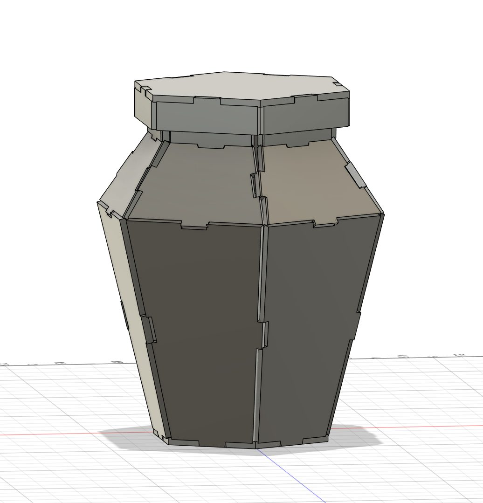
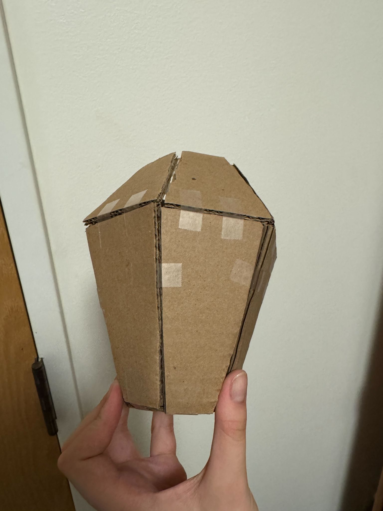
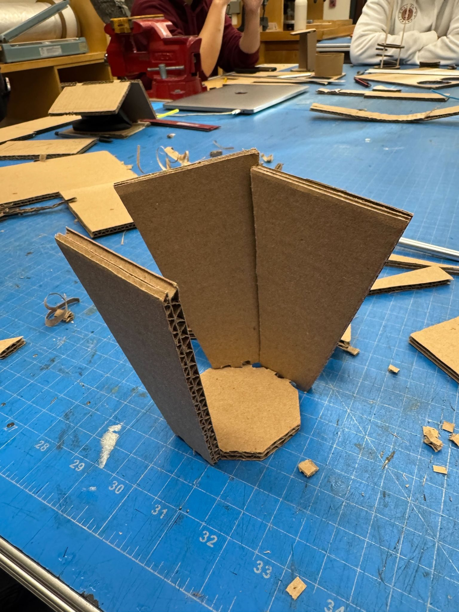
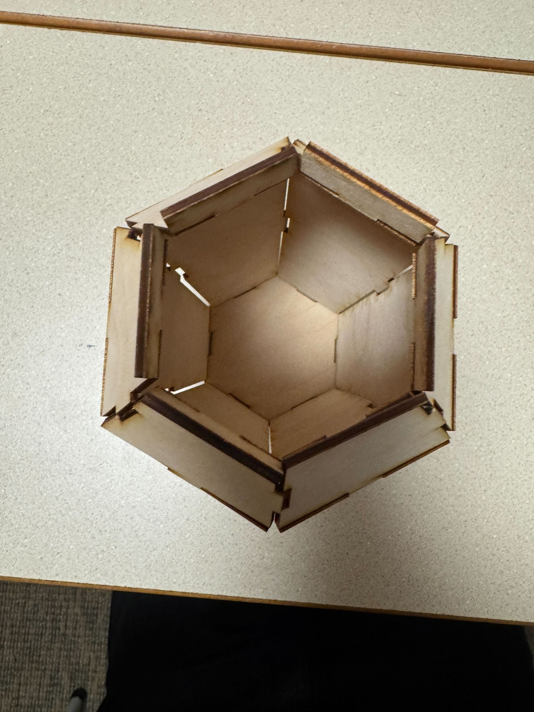
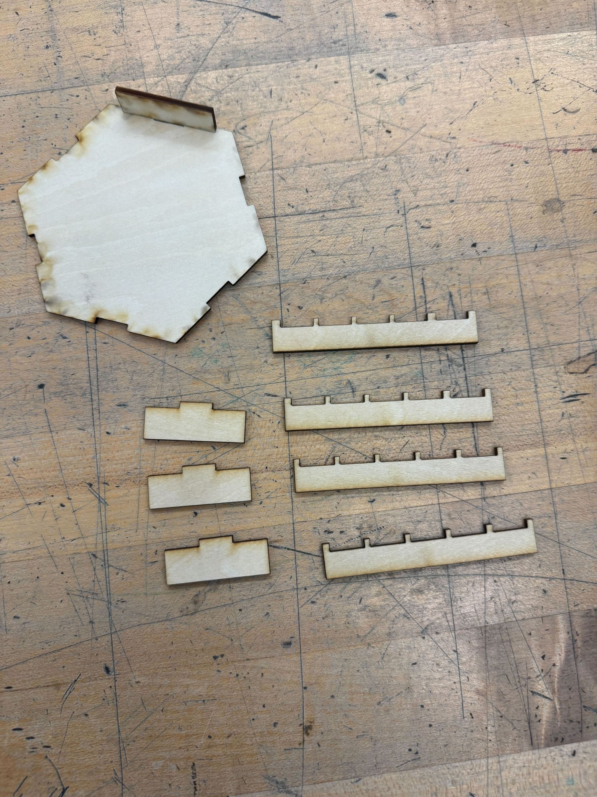
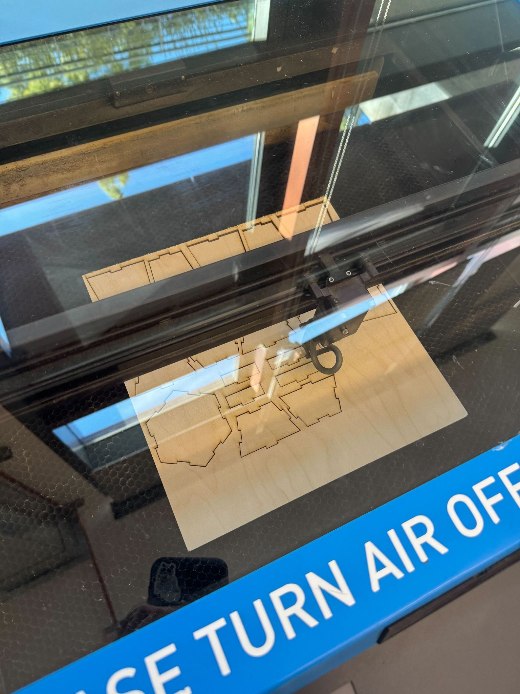
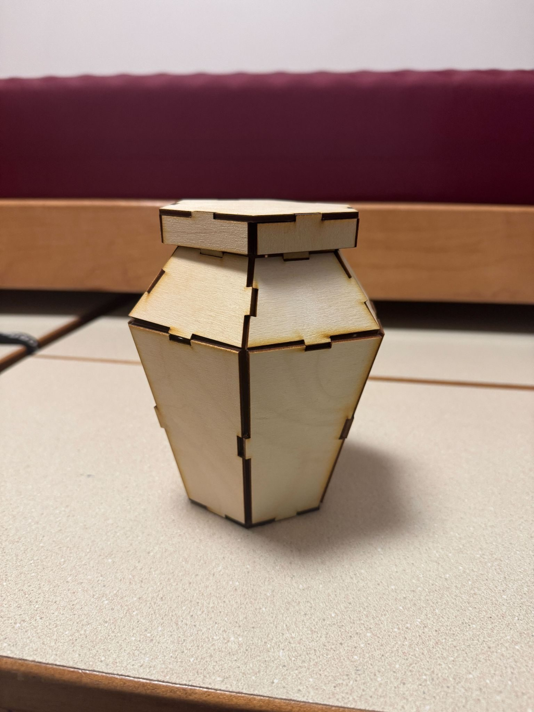

A laser-cut hexagonal container for my dog's treats, built entirely from friction-fit joints.
Design and build a container using friction fit joints — no glue, no fasteners. I designed mine to hold my dog's treats, which pushed me toward a hexagonal form I thought would look clean but that turned out to be a much harder friction-fit problem than a rectangular box.


I started with conceptual sketches of the hexagonal shape, then built an initial prototype out of cardboard and tape just to get the shape right, before finalizing the geometry in CAD.


I laser cut the parts, trying to maximize material usage across the sheet, and printed multiple sets after breaking a few tabs on earlier attempts. I ran friction-fit tests across several tab sizes — the difference between sizes was much larger than I expected, and orthogonal joints fit noticeably better. My ideal fit turned out to be a 0.5" tab with a 0.47" spacer.



My sketches and prototypes helped me settle on a shape, but I didn't fully anticipate how hard it would be to make a hexagonal container where all the friction fits worked together — I had to redo my tabs after initially only changing the female ones, and reprint pieces that splintered from careless handling. In general, the container turned out about as I expected, but I'd like to try a 3D printed base to help align the joints, and remake the tabs longer for more surface area in the fit.